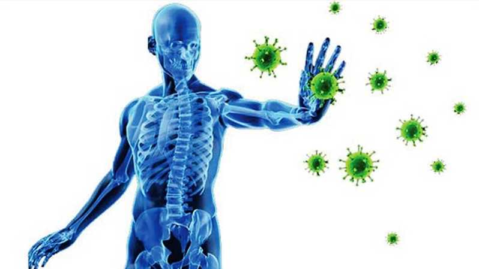

KULIAH DARING DI TENGAH PANDEMI COVID-19
STUDY FROM HOME
By: Sanme Fiorenika
Opini COVID-19 !
COVID-19 melumpuhkan segala sektor bidang, membuat semua orang melakukan berubahan dalam sekejab.
Ini adalah persoalan bersama dalam menghentikan sepak terjang protofolio COVID-19.
Dari yang saya lihat dilapangan dan bagaimana sikap yang harus dihadapi, sebenarnya kita tidak perlu
takut dengan COVID-19. Sikap yang harus kita lakukan adalah mematuhi protokol yang ada, melakukan upaya-upaya
pemberantasan. Jika seluruh manusia bersatu dan adanya sikap sadar diri, saya yakin angka kematian dan yang terjangkit
COVID-19 akan menurun secara dratis. Namun sayangnya, sikap itu belum terlalu menyatu dengan masyarakat Indonesia.
Beranda